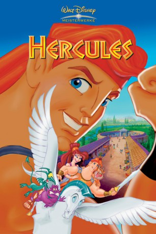

#2323 Hercules
Auszeichnungen: für 1 Oscars nominiert
 
 IMDB-Wertung: 7.3 / 10
IMDB-Wertung: 7.3 / 10  Metascore: 74
Metascore: 74 
Hades lässt den kleinen Hercules von seinen gehilfen Pech und Schwefel entführen. Sie beiden sollen ihn mit einem Gift zu einem Normalsterblichen machen, doch der Kleine überlebt. Da Hades das aber auf keinen Fall herausbekommen darf, wird Hercules zu einem Bauernpaar gebracht. Erst Jahre später erfährt Hercules von seiner wahren Herkunft.
Jahr: 1997
Dauer: 93 Minuten
FSK: 0
Land: USA Studio: Buena Vista PicturesTonspuren:
Untertitel:
Auflösung: 720p (1280x720) Größe: 2344 MB
Genre: Komödie, Abenteuer, Fantasy, Animation/Trick, Familie, Liebe, Musical
Regisseur: Ron Clements, John Musker
Drehbuch: Ron Clements, John Musker, Don McEnery, Bob Shaw, Irene Mecchi
Soundtrack: Alan Menken
Darsteller:
Datei: X:\Kinder Disney HD\1900-1999\Hercules (1997, FSK0, 1280x720).mkv seit 30.10.2015
Festplatte: Kinder-Filme+Trick
 Es gibt insgesamt 16 Filme in der Gruppe 'Kinder Disney HD\1900-1999'
Es gibt insgesamt 16 Filme in der Gruppe 'Kinder Disney HD\1900-1999'